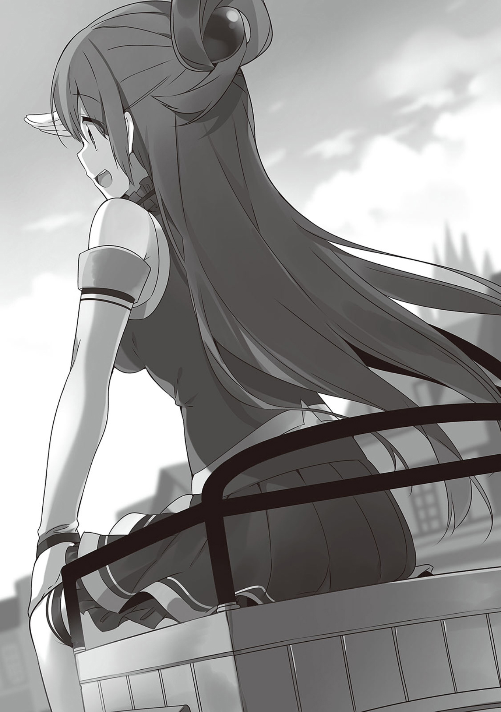
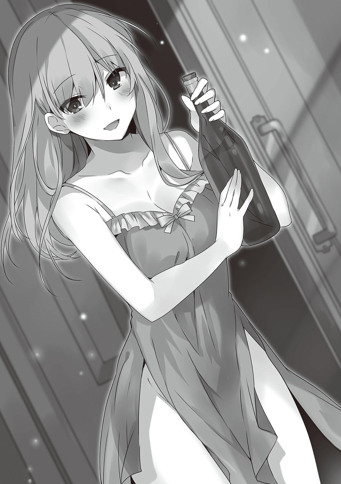
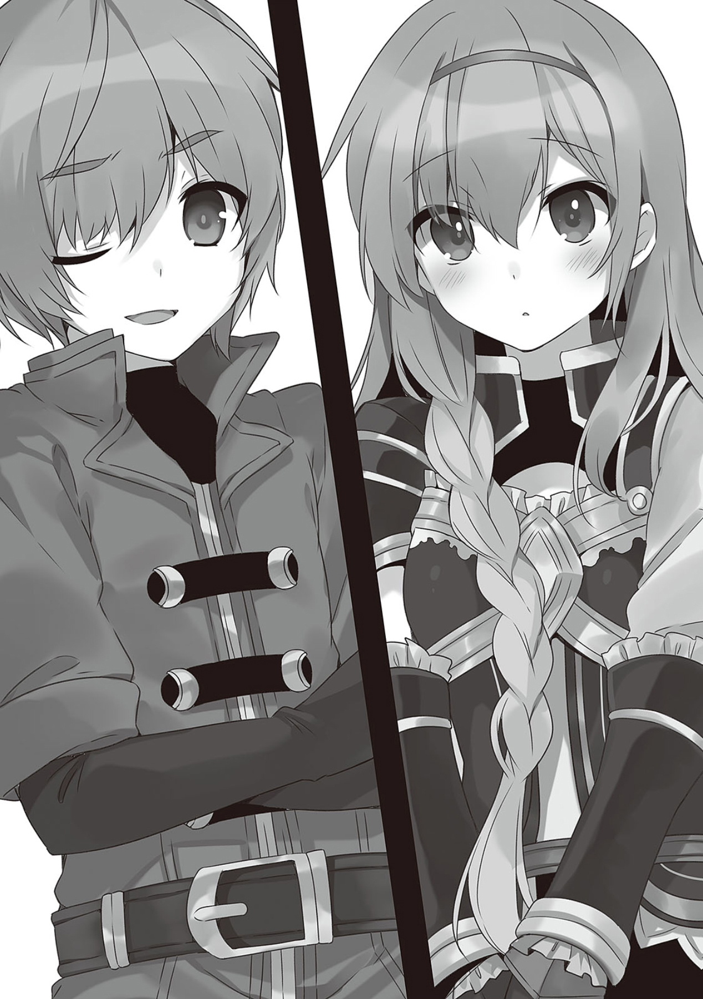

1
那个国家被别国这么称呼。
赌场大国艾洛德。
来到邻国艾洛德的我们，被其繁华和喧嚷所震撼。
「快看和真，人多得像阿克塞尔城的祭典一样！这么多人到底从哪里来的！」
龙车正以和人步行差不多速度在大街上行进着，因为看到热闹的人群兴奋起来的阿库娅移到了车夫座上，大声嚷嚷着四处张望，笑嘻嘻地看着路上的人。

「喂阿库娅，我们可是微服出访，你别太引人注目啊？别忘了我们是来干什么的」
我姑且是提醒了她，但她已经被路边摊位吸引住了。
不过，我也不是不明白她的心情。
以日本来说的话，这边人多得让人以为是涩谷的十字路口的地步。
这个世界的人口比地球要少得多。
尽管如此，有这么多人在，也就是……
「这是『让别人看到王都有多么繁华』的宣传战略。看，那边的街角有个人对不对？他肯定是转了一圈又回到那里的。也就是个托儿。他们一定是被雇来毫无目的地在路上走的人」
「和真的洞察力真不是盖的。我也觉得有些奇怪，毕竟这样一来我们的据点阿克塞尔不就变成乡下了吗」
我和阿库娅小声地议论着，达克尼斯的脸稍微红了起来。
「你们两个少说点蠢话，安静点吧。要是被人看作乡巴佬我可受不了」
被达克尼斯当作乡巴佬也是没办法。
面向大路的摊位上正排列着我没见过的食材，做着买卖的人们扯着嗓子吆喝。
大概是住处已经事先安排好了，龙车停在了朝向大路的一座巨大的建筑物面前。
「好了，这是安排好了的旅馆。大家先去自己房间放下行李吧。爱丽丝殿下和王子的会面是在明天。今天就请各位好好地观光一下，消解路途的劳累吧」
达克尼斯把龙车交给旅馆的工作人员，对我们说道。
我们兴致高涨起来，然而爱丽丝摇了摇头，
「我要准备明天的会谈……毕竟第一次和王子见面会有些紧张。大概是这个原因吧，我想先去休息，大家就先去观光吧」
说着，她拿起自己的行李。
「爱丽丝殿下，您不是很期待来这里的吗？我们是护卫，要是留下爱丽丝殿下一个人的话……」
「不，不行！大家去好好休息下。难得来到赌博之国，把你们留在旅馆我可没法安心休息！」
她是个很会关心身边人的人，把我们留下，大概会真的会担心得没法休息吧。
「好啦达克尼斯，爱丽丝都这么说了，我们就去放松一下吧」
「呜……好，好吧……」
达克尼斯还是有些不舍，但她被爱丽丝的笑容以及她透着某种决心的目光压制，无奈的点了点头。
——我们把行李放好在安排好的房间里后。
「赌场！首先去赌个痛快！大赢一场后，就用拿到的钱去把美食吃个遍！这里肯定有非常贵的酒卖的！」
「不对，我们去这城市的武器防具店！肯定会有配的上我的超强力魔杖！」
我们马上一起来到城里。
「唉，留下爱丽丝殿下真的好吗……」
只有达克尼斯一个人有些恋恋不舍。
爱丽丝好像对这次的会面有些没信心。
大概是认为现在不是玩的时候，而在一个人为明天的会见进行模拟练习吧。
抱多余的挂虑大概只会起反效果，之后买些礼物给她吧。
不过，话说回来……
「你们还是一如既往的意见不一啊。难得来到这里，首先该去观光名胜吧。红魔乡里有很多观光地，这城市也……」
理所当然地会有什么珍奇事物吧。
——正当我准备这么说的时候。
「哎哟~好漂亮的冒险者啊。我说，那位金发美女大姐姐，别管那个不起眼的男人了，和我们一起在这座城市里玩玩好不好」
「真的，好漂亮啊！我喜欢那个蓝发的姐姐！」
「我的话就是黑发红眼美少女吧……」
那是三个看起来十分轻浮的年轻男人，一言蔽之就是轻浮。
看起来大概比我大一两岁吧。
那三个人穿着大城市特有的华丽服饰，笑嘻嘻地看着我们。
他们体格瘦弱，给人一种来到大城市游玩的富家子弟的印象。
而我那被那三个男人搭话的同伴们……
「「「？」」」
她们三人四下张望着，寻找起符合那几个男人说的特征的人。
……最终，她们意识到那只能是自己了。
「「「！？」」」
我的三位同伴，马上变得鬼鬼祟祟起来，不知所措。
达克尼斯连忙转向后面梳起头发，惠惠用力掸起路途上沾在袍子上的灰尘。
阿库娅说道。
「你们刚才是不是说我们是美女啊？说我们漂亮是吧？来再说一次看看呀！」
…………
阿克塞尔城里可没追求她们的怪胎。
倒是偶尔会称赞下她们的脸……
看着被人当作顶级美女而不知所措的三人，我不禁潸然落泪——
「啊……那啥，真是漂亮的小姐姐们啊……和我们一起在城里玩好不好……」
大概是对阿库娅的反应感到困惑，三个男人中的一个说。
听到这句话，阿库娅她们贴着脑袋组成个圆阵。
然后她们叽叽喳喳地讨论起来。
最后惠惠像是代表三人似的站出来。
「也就是你们三位，有为了和我这个超绝美少女和这两位美女约会，豁出钱财和性命也在所不惜的觉悟，所以才说『约吗』对不对？」
「「「没有到那种地步」」」
三个男人马上否定起来。
…………！
我意识到了。
意识到了。
这里是赌场之国，商业大国的王都。
我理所当然地想要到处转转，放松一下。
这时候和这三个逗比一起行动会怎么样？
好好想想，好好想想佐藤和真，这帮人怎么可能不搞事。
然后肯定会连累到我身上。
不过，如果出问题的时候我不在她们身边，而有这三个男人在的话呢？
…………
「那啥……莫非我们遇到仙人跳了？」
「喂……这可不妙。难得来观光，我们是不是闹太过了啊？」
「可，可是啊，虽然败絮其中，可是脸还是那么漂亮啊？」
三个男人小声嘀咕商量着的时候，阿库娅她们朝我走近过来。
她们鼻子都翘了起来，一脸得意。真来气。
「哎哟和真啊，这可怎么办呀？真难办呀，被人说是美人。他们想和我们约会啊。被那三个人说是不起眼男人的和真，虽然平常就和我们呆一起，说不定已经习惯了。那啥，我觉得你要搞清楚，和我们这样的美女一起组队可是上天的恩赐喔？不然的话我们可能就跟着这些男人跑了哦」
「请便请便」
「「「「「「什么」」」」」」
听到我说『请自便』，不仅是阿库娅她们，连男人们都冻结了。
「……那个，我说和真？你刚才，说了什么……」
阿库娅的声音带着些不安。
她们是高等级冒险者。
我可不觉得她们会打不过这几位普通人小哥，再说了，她们和什么人约会，我可没资格说三道四。
倒不如说，我已经全心全意要把她们塞给这三人了，我高兴地说道。
「我说『请便请便』。话说我又不是你们的老妈，不能总帮你们擦屁股，我想尽情放松下——偶尔有这种想法又不会遭天谴」
「「「咦」」」
大概是我的话太过意料之外，阿库娅她们发出了奇怪的声音。
「……喂，刚才那个男人是不是说了『擦屁股』来着」
听到我的话，男人们之一小声嘀咕。
而惠惠则一脸慌张。
「等等和真，你突然说些什么！你听好了？我……不对，我们可要和这些人去玩了啊？那啥，你就不会醋坛子翻了……」
「完全不」
「这男人真敢说！」
惠惠仿佛受到了什么打击一样。虽说最近我们感觉还不错，但毕竟还没交往。
那么满嘴爱丽丝爱丽丝的我也没资格说这话。
达克尼斯把手搭在愣住了的惠惠肩膀上。
「别急嘛惠惠。你也知道这男人不直率的。嘿嘿，没错，他可是个典型的傲娇」
然后，她对我露出了和我较劲般的微笑。
「我说和真，你这种时候倒是率直点好嘛？你可是带着我这种随时都会引人搭讪的美少女在城里逛街哦？要不和我挽手腕啊？说不定有机会碰，碰到胸哦……」
「不用了。你浑身肌肉，连胸看起来也是硬的」
「啊！？」
男人们把一副受到了巨大打击的表情的达克尼斯扔在一旁偷偷议论起来。
「喂，你们怎么想？我觉得那个男人渣到爆。而且感觉这里有鬼……」
「放弃吧。难得来观光就别摊上事了……」
「是，是啊，俗话说老虎屁股摸不得……放弃吧……长那么漂亮真是浪费了……那，那啥！我们，想起有急事了就……」
我逮住说着打算跑路的三人。
「不是想和我的同伴约会嘛？」
听到这句话，其中一个男人脸颊抽搐着想要把我拽着他的手挥开……
……并没有成功。
「哇？啊……痛，好痛痛痛……！呃，不好意思，我开玩笑的，我们不该向你的同伴搭讪的！不，不该说你是不起眼的男人的！我们要走了！」
我也是等级不低的冒险者。
数值也上升了，力气不会输给普通人。
「不不，没关系。没关系的。我的三位同伴可漂亮了。嗯嗯，我很清楚，很清楚的」
「哦，哦……」
男人们用看着怪胎一样的目光看着我，脸上丝毫藏不住担忧。
我压低声音接着说——
「你们看那位金发铠甲大姐姐。那位姐姐，脱掉铠甲可厉害了。尤其是腰，简直一绝！」
听到我的话，男人们吞了吞口水。
然后我对他们三人继续说。
「那位蓝发的姐姐喜欢喝酒。和她说请她喝酒的话，她可高兴了」
三人面面相觑。
「那位黑发妹……那啥，她有养猫，喜欢可爱的东西。带她去有可爱的生物的地方说不定能逗她开心」
三人闻言相互点了点头。
「「「那，那就恭维不如从命了……」」」
我离开态度软了下来，开始傻笑起来的三个男人，对阿库娅她们挥手告别。
「那么几位，之后见。今天就玩个痛快好了。所以明天开始就别给我添麻烦。今天随便你们玩了」
「「「咦」」」
听到我的话三个男人发出了不安的声音。
阿库娅看着他们说道。
「听好了？我可没带什么零花钱呀？我阿库娅小姐，可不接受便宜的酒哦？」
三人之一闻言敲了敲自己胸膛。
「包，包在我身上！我们三人，有钱。毕竟我们父母可是上流社会人士。要不，这城里的一切费用都由我包吧！」
说出来了。
清楚地听到这句话的我——
「好了，你们几个好好享受吧。我也去放松下。一切都包在你们三人身上了。可别把我的伙伴扔在一边不负任何责任跑路啊？」
我说着转过身……
「你，你这男人到底要有多出乎我意料啊……你这种并非是在闹别扭而像是在陈述事实的口味让我非常忍不了，让我有些慌……你在较劲是吧？只是和我较劲对不对？……喂你们几个，事先说好最好别对我们动歪脑筋。要不然那位在新手城阿克塞尔里以鬼畜著名的男人可不知道会办出什么事来」
「「「咦！？」」」
达克尼斯在我身后说着些没礼貌的话。
「就是。这随便地把柔弱的美少女们扔下走人的态度——你们能够想象他是怎么样的人了吧？要是不好好对我们的话，之后那个男人可会露出獠牙。别看他那样，他可有着能轻松入侵戒备森严的贵族宅邸的能力，还能够远距离狙击目标。与他为敌就别想睡安稳觉了」
「「「！」」」
喂，闭嘴。
「我说你们两个就别说得那么过分嘛！和真可没鬼畜到这种地步。虽然的确是个引起了炸飞了大人物的宅邸，背上叛国罪的嫌疑，还被禁止进入王都的问题人物……」
阿库娅，加把劲啊喂。
你这不叫圆场，再加把劲！
「「「…………」」」
我战战兢兢地转过头看向一言不发的三人……
「……那个，我们还是算了吧，不想和你扯上关系……啊啊啊啊！？跑了！？」
一个男人对我说着什么。
「「「跑了！那个男人真把我们丢下跑了！」」」
我把接着叫喊着什么的阿库娅她们扔下，我在艾洛德城里猛地奔跑起来！
2
这里是我来到这个世界第一次来到的外国，而且是让我觉得迄今为止去到的城市都是穷乡僻壤的大都会。
我在艾洛德的王都里。
「最后一击，看招！」
「骗人的吧啊啊啊啊啊啊啊！」
「「「「「「「噢噢噢噢噢噢噢噢噢噢噢噢！」」」」」」」
我临时加入卡牌游戏的大会，一路过关斩将。
「他到底是什么人啊？」
「虽然没见过，但是有如此实力的男人，不可能是无名人士！」
看客们远远地围着我发出阵阵欢呼。
「那个男人的接二连三的激烈攻势……和传闻中的『黑之卡塔莉娜』的特征挺吻合的吧？」
「什么，那个传说！？不，可是我记得『黑之卡塔莉娜』应该是个女的……」
黑之卡塔莉娜是谁啊。
「等等，看那个男人的陷阱卡使用方法。可能是『谋略的克劳德』……」
「的确。那种下作的陷阱卡使用方式，除了『谋略的克劳德』以外不作他想……」
谋略的克劳德又是谁啊。
这是有名的冒险者会有绰号的异世界。
大概有名的玩家也会有绰号吧。
我原来的世界里，也会用各种各样的名字来称呼网游的队友。
没错，虽然都是『光有好运气的和真』啊『人头狗和真』啊这些坏名声。
……正当我沉思的时候，一个女人站在了我的面前。
「你就是我的对战对手？呵呵，没见过你呢。看你似乎只有抽卡特别厉害，这个游戏光有运气可赢不了。没错，要讲究策略。只有运气虽然能够战胜中级者，可对我这样拥有诨名的人，从头到尾只会被吊打」
我是不会吐『有诨名什么的太羞耻了吧』这种俗气的槽的。
因为现在的，身为一个玩家，久违地兴致高昂。
「你的连胜就到此为止了。由我『铁壁的玛丽涅丝』来终结你」
这位明显比我年长的大姐姐，脸不红气不喘地报上名，露出大胆的笑容开始抽卡——！
——我在对我来说到处都很新奇的大街转悠，看到这个时不时传来欢呼声的建筑物，好奇地走了进去。
作为观众稍微参观了下后，看到人们在那里玩着的卡牌游戏和我很熟悉的游戏十分相似后，便决定临时参赛了。
大概，是被送到这个世界来的日本人将那个游戏推广的吧。
喜欢玩游戏，也玩过这个游戏的我，除了备齐基本的卡片的标准包外，还充分发挥金钱的作用买了装入了强力的稀有卡片的尊享包。
我做了个在日本是被当作犯规的著名恶毒卡组。
「——我的回合！我的回合！一直都是我的回合！」
「给条活路吧！为什么要做到这种地步，都已经分出胜负了好不！」
「喂，铁壁的玛丽涅丝都哭出来了，快来个人阻止一下！」
我不顾观众的声音，享受着久违的游戏。
「请了结我吧。真对不起我太自大了」
被我吊打而终的对战对手大姐姐，边哭着边道歉。
「打得不错，我们以后再战吧」
「绝对不要。放过我吧」
对战过后，我伸出手请求握手，但我的手上却突然被塞满了赌注。
对，这里可是赌场大国艾洛德。
玩个游戏都会和赌博扯上关系。
大姐姐退场了，我的兴致更加高涨起来，朝着会场喊道。
「请求对战！」
——几个小时以后。
我在那之后也不断地连战连胜，高兴地离开会场，寻找下一个去处。
虽然并没有什么的目的地，不过探索未知的城市实在让我心情澎湃。
因鼓鼓的钱包的重量而心情不错的我，意识到自己肚子已经饿扁，便环顾周围打算随便找个店进去——
「呀—！来人啊啊啊啊！有人在沙浴中变得像木乃伊一样了！有会用回复魔法的人吗！？」
我看到个意大利面料理的餐馆，于是便在那边解决午餐了。
「欢迎光临，请问是一个人是吗？那么请来吧台坐席吧——」
服务生把我请到吧台上坐下，我随便点了些东西。
我一边等着点的料理，一边看了看店里的环境，附近的桌席上的男人们的声音传入我的耳朵——
「哎呀，今天收获也十分丰盛！为艾洛德干杯！」
「是啊，经济这么景气，做什么都顺利。听到国王陛下长期在外国出差的时候还有些担心，那个王子干得比预想中好不少嘛」
「就是，明明一直被人叫做笨蛋王子的」
……嗯？
我听说这个国家应该是财政十分困难的，景气是怎么回事。
还有『笨蛋王子』也十分让我在意。
「可是啊，景气的原因似乎全都是因为宰相大人在掌管国家哦。虽然那个笨蛋王子似乎也有政治上的决定权，可我听说他什么都不干，好手游闲来着」
「那么就不为艾洛德干杯了，为宰相大人干杯！」
「「「喔喔，为宰相大人！干杯！」」」
……越来越更加不明白了。
听他们说主导这个国家政治的是宰相？
也就是说，是那个宰相停止了支援吗？
可是，这个国家现在国王似乎不在啊。
虽然听说王子和爱丽丝差不多大，不过似乎这个世界的王族在这个年纪参政是理所当然的。
我在爱丽丝这个年纪的时候，还通宵玩游戏被父母责骂呢——
我离开店，想起留在旅馆里的爱丽丝，于是去买礼物。
一时想不到该买什么东西来讨爱丽丝欢心。
我也觉得送她什么她都会开心，话是这么说，也不能给一国之公主送太过廉价的东西……
「喂，马谢兰里好像来了个技艺高超的艺人啊！」
「马谢兰？马谢兰是说那个超高级的店马谢兰？那不是艺人能进的店吧？」
「好啦总之快去看吧！好像她在毫不吝啬地使用店里的高级用品变戏法来着！」
我看着男人们这样交谈着从某家小店里飞快地走出来，目光无意中停在了店的招牌上。
似乎是家卖饰品的店，我走进店里，看看有没能当作礼物的东西。
「欢迎光临」
店里有个冷淡的店主。
店主坐在柜台旁看着报纸，看都不看我一眼。
我环顾店里，周围陈列着从疑似手工制作的女生的项链，到男人用的手镯等各种各样的小东西。
不意间看向柜台，玻璃橱里陈列着一些看起来格外高级的饰品。
就在那里面随便选点什么吧。
找找看有没有什么配得上爱丽丝的……
「唔哦！？什，什么鬼，地震啊！？」
店内摇摇晃晃。我没有理会夹杂着店主惊叫的从远处传来的爆炸，突然想到——
以前侵入王城的时候，我偷走了爱丽丝的戒指。
那个戒指虽然还在被我小心地收着，事到如今我还在烦恼着要不要还回去。
对，戒指！
虽然东西是自己偷的，也没法说什么，可这样一直下去实在是让人不舒服。
想暂且还一个给她，哪怕那不是同一个。
对，就给爱丽丝买个戒指吧！
要买就买最贵的，我在玻璃橱里物色着，可那里并没有戒指。
「大叔，这里有没戒指卖啊？越贵越好」
「戒指？我这里可没高档货卖啊。只有那边放着的哄小孩子的玩意儿而已」
被地震吓得站起来的店主指向店里一角。
那里放着一个几百厄里斯的便宜货戒指。
送公主大人这种东西真的合适吗。
话是这么说，初到乍来我也不知道这城市有什么高级饰品店，怎么办好呢。
对，就这么办。
先把这个买了，找不到别的东西可送就送这个。
「大叔，我要这个戒指！」
我把买下的戒指放进怀里，离开了店里——
3
「啊，回来啦。观光的怎么样」
日落时分。
地点是白天和她们分手的地方。
我回到那边，发现我的同伴们已经到齐了。
阿库娅在地上抱膝坐着，像是什么事都没发生一样把头转向一边，达克尼斯一脸满足，全身冒着热气。
而惠惠则是被达克尼斯背着，表情舒畅
陪着她们三个的男人们……
首先，少了一个人。
然后其中一人满脸黑线，一动不动。另外一人仿佛遇上了什么精神创伤，抱着膝盖颤抖，嘀咕着什么。
真不太想问发生了什么……。
惠惠仅从我的表情中就察觉到了我的心情。
「和真，虽然你可能不想听，但还是先听我说说……」
「……我听着呢」
没办法……
我看向显得非常高兴的达克尼斯。
「……首先是不在这里的那位。听说我们是刚来到这里，为了消解我们旅途的疲劳，就说『有个高级疗养设施，首先就去那里享受下』」
嚯。
「然后被带到类似理疗设施的地方，那里竟然有我最喜欢的沙浴。说到沙浴的话，就是穿着叫做YUKATA（浴衣）的衣服躺在地上，埋在加热过的沙子里……那个男人不知想什么，屁颠屁颠地跟在我后面来了。然后因为他说了『好，我要比达克尼斯撑得更久，展现我坚毅而帅气的一面』我也不小心认真了起来……」
「回过神来，那个人已经濒死了。注意到这点的工作人员把他送到医院里去了」
……原来如此，这样才少了一个人啊。
接着，惠惠有些难为情地低下头移开了目光。
「……那个。那位说要带大家去好地方。他带我们去的是离城里有段距离的某条河。那位骄傲地炫耀了一番大葱鸭群——『大家请看，这里是这座城市的观光名地——大葱鸭养殖地。很可爱吧』。如你所知，大葱鸭是经验值很高的怪。这样一来我不就只能用爆裂魔法一扫而光了嘛……然后他就像受到了什么打击一样，一直这个样了……」
带你看大葱鸭群结果大葱鸭却被当面轰杀了么
我把目光从还在瑟瑟发抖的男人身上移开，看着不断说着『我什么错也没有』的阿库娅。
……感觉她干的事是最智障的。
「那个，阿库娅的话，就是……」
惠惠支支吾吾，而到刚才为止都一副筋疲力尽的表情一动不动的男人突然猛地站了起来。
「这位姐姐，在这个城里最高级的店里吃饱喝足醉成烂泥后，说什么『让我们来给你们耍一波』，擅自用店里的高级用品表演宴会艺。厉害倒是挺厉害的。很厉害啊。可谁也没想到那是毫无弄虚作假的技艺啊！我说，用手帕包着消失的三角钢琴到底消失到哪里去了！？按照大小来说是不可能收到手帕里的吧！」
又搞些奇葩事情。
不过那还真提起我兴趣了，下次一定要让我见识见识。
「这么一来，在那家高级店里消耗掉的家具和钢琴的账单……还有，大葱鸭养殖场的……我一直在请求她们至少支付一半的赔偿金……啊！喂等等，这样我会被父母骂的！哪怕三分之一也好……！」
我们塞住耳朵跑离了现场。
4
「艾洛德如何啊？大家玩的开心吗？」
一回到旅馆，爱丽丝就出来迎接我们。
「我可在这城里创造了传说，而她们也在某种意义上创造了传说」
爱丽丝似乎没法理解我在说啥，不解地歪起脑袋。
不过看到达克尼斯她们的表情，她便下了不问为好的判断。
就在这时。
「那么爱丽丝殿下，今天已经很累了，早点休息为明天作准备吧。今天为了能够在房里安心休息，我也嘱咐旅馆送饭上门了。请好好休息吧」
达克尼斯一反常态地毕恭毕敬地说道。
「要睡觉还太早了吧？当然，我的确也想好好准备明天的事」
爱丽丝不解地说着，达克尼斯有些做作地挤出非常抱歉的表情。
「爱丽丝殿下，明天是非常重要的会面。我认为您应该今天万万不可熬夜，请充足睡眠，以明天展现您最美的姿态」
「……是吗，我明白了，今天我就早点休息吧」
爱丽丝一边偷偷看着我一边走回房间，达克尼斯用力击打了下手掌。
「好。那么我们也尽快睡觉吧，明天可有重要的会谈。虽然还早，然而该休息的时候就休息也是护卫的工作一环！」
我对催促我们解散的达克尼斯感到有些可疑，不过因旅途而多少感到疲劳的我们也没怎么怀疑，回到了房间——
——这是那个吧。
达克尼斯和蕾茵商量的，说要给我下药的事吧。
毕竟相处已久，她撅起屁股来我就知道她是要拉屎还是要撒尿。
我匆匆地回到房间，仍未上床睡觉，不断戒备着。
她到底会打算用什么方法给我下药呢。
直截了当的话就是突然踹开门猛扑过来，硬让我喝下。
可是这样就会有被我反抗的危险。
那么也有放在晚饭里的可能，然而今天大家都是在外面吃的。
我认为要执行作战的话就是今天晚上了，到底是用什么方式呢……。
「和真，还醒着吗？」
达克尼斯的声音和敲门声一并传来。
现在是八点。
在这个以早睡早起为生活基准的世界里，这都算是『睡觉还太早了！』的时间带。
「我还醒着。门没锁，进来吧」
不过我也不是省油的灯。
真以为我会那么容易被下药吗？
虽然不知道她打算用什么方式，但我会握住主导权，好好调戏她一番——
……我到刚才为止的想法立马被轰到九霄云外。
「是，是吗。那我进来了。有些话想和你说」
因为达克尼斯那露出度超高的睡衣——
——达克尼斯走进房里，把手上拿着的巨大酒瓶放在房间中央的桌子上。
轻视对手的是我。
没错，她可是擅长玩弄权术的贵族。
真没想到会用色诱。
「你你你，你这是什么样子。你那些不能看的地方都要露出来了」
「！？」
被我吐槽的达克尼斯刷地红了脸。
太好了，看来是并没有从容到毫不慌乱地勾引我的地步。
「是吗？这还算一般吧？而且，不是有旅行会让人变得开放的说法嘛。先不说这个了，先来喝一杯如何？」

达克尼斯听到我的话，态度沉稳地在我面前拔出了酒瓶塞。
这清脆的声音，表示这酒迄今为止都是被密封着的。
也就是药应该没被下到酒里。
「也是。毕竟这时间带要睡还是太早了。难得你带来睡前酒了，我就喝一杯吧」
说着，我拿起达克尼斯正准备倒入酒的玻璃杯之一。
「哎哟，不好！」
将其重重地摔到地上。
杯子发出声响，摔得粉碎，碎片散落一地。
看到这样达克尼斯的脸色刷地变了，我把手伸向碎散的碎片。
「<风之吹息（Wind·Bless）>！」
我用风魔法把碎片撵到房间的角落。
「……哼。不好意思达克尼斯，我手滑了……哎呀，只有一个杯子了。我下去拿一个吧，明天再让旅馆的人清理碎片好了」
我对达克尼斯说道，离开房间……
「等，等下和真。你想，那个……杯，杯子有一个就行了吧？原本我就打算只倒酒，来慰劳日夜操劳的你的！」
正当我打算走出去的时候，衣服的下摆被拽住了。
这人，明明是个视权术为理所当然的贵族，在『不动声色』这方面做得真差。
「嚯？慰劳我什么啊？在你眼中，每天光会睡觉的我有那么辛劳吗？」
「……不，不是！那个……你看，不久前不是又打倒了一个魔王军的干部了嘛！我们已经葬送了很多干部了，这其实是非常了不得的哦？」
她慌忙寻找借口，然后表情严肃地直直地盯着我的脸。
「这一切都是因为你作为领队带领着我们。我们尽是给你添麻烦，一直以来真是承蒙你照顾了，和真……」
说着，她露出了看似纯洁而爽朗的笑容。
是吗，这种虚实交替的方式就是贵族的手段啊。
……但是，太天真了。
虽然有一瞬间差点儿中套，可我是个和人见面时会先去猜疑的谨慎男人。
我攥住达克尼斯握住酒瓶的手。
「这是我才想说的。我只是个冒险者，是最弱职。没有你们我什么也做不到。尤其是达克尼斯，要是没有你的话我们的队伍都不知道被全灭多少次了。要慰劳的不如说是你，来，拿好杯子。我给你倒酒」
「什！」
她看着握住她手的我，发出了受惊的表情。
她稍微愣了愣，意识到我打算拿起酒瓶。
「哪，哪里哪里，没事的和真。你的好意我心领了。今天是我来慰劳你，让你来招待我就太不好意思了。来，把手从酒瓶上放开，拿好杯子。我来给你倒酒」
尽管她用平静的语气说着话，可她用力抓住酒瓶用抵抗着，不让我夺走。
看到她这么抗拒，果然药是涂在杯子里。
「怎敢怎敢怎敢，让身为贵族的你来倒酒才没天理。偶尔也让我侍奉下大小姐您吧，要不然，你想，明天是要身为护卫进城的吧？说不定那个时候会犯下大错呢。我可不能在公共场合毫不客气地直呼身为贵族的你名字啊！」
我抓紧了酒瓶想要将之夺取过来，达克尼斯的本性终于暴露了。
「烦，吵什么吵，快放手！一直随意使唤我，事到如今装模作样还有个屁用！你在来这个国家的途中不都在骂我『派不上用场』吗！平常都看扁我，说我是重要时候派不上用场的女人，护教骑士是防御职业，没法大开杀戒的啦！」
「你才给我放手！你明明根本没有慰劳我的打算！真要慰劳就用身体侍奉，别用酒！这样我才高兴！你看，这杯子里涂着什么的吧，要是你问心无愧的话就喝喝看啊！」
我们互不相让，渐渐地开始针锋对麦芒——
「唔，我，我就是问心无愧！但我就是不喝。这酒是给你的慰劳品！是吗，比起酒身体更好对么。好我明白了，你都说到这种地步了我就用身体慰劳你好了！给我在床上躺着！」
「你丫，给我下药的阴谋暴露了还倒打一耙啊！好，既然你都这么说了，你就让我爽爽吧！」
以眼还眼以牙还牙，我和达克尼斯异常激动地来到床上。
明明平时都说些蠢话，我很清楚她一到关键场合就会缩。
我脱掉上衣扔到一边，在床上躺成个大字。
「正面上我啊！」
「你，你——！」
我裸着上半身。达克尼斯背过了脸，大概是不知道该往哪看好。
「噢，怎么啦怎么啦？果然大小姐还是空有一张嘴啊！这也难怪，平常老说我怂，自己却还是个光在脸上亲一下就会害羞的大小姐啊！」
「有你的，怎么让你这平民继续看扁我！我说到做到，就用身体慰劳你！」
不等自己说完，达克尼斯就压在了我的身上。
然而，她好像不知道该从推倒我的姿势开始做什么。
「喂，你可别说用身体慰劳是给我『按摩』的意思哦！平常脑子充满了淫秽幻想的你应该知道我在说什么吧！」
「不，不许说的妄想！我可是达斯提尼斯·福特·拉拉蒂娜。不论遇到什么艰难险阻，我都绝不会逃避……！」
『嘭』的一声，门被用力打了开来。
穿着睡衣的惠惠，眼睛闪着红光站在那里。
「烦不烦啊从刚才开始就吵个没完！你们到底在搞什么！」
被达克尼斯推倒的我，马上向惠惠求救。
「惠惠救命，她要侵犯我！」
「啊，你，你居然——！？」
5
「受不了，达克尼斯你到底在想什么啊。虽然没叫你停止发情，这个旅馆里还有爱丽丝啊？这档事起码回到家后再做啦」
「不是的，不是的惠惠！这是有原因的！」
差点被达克尼斯袭击的我抢先向冲进房间的惠惠告状了。
「什么不是啊，明明都要对我下药了。被子里涂上了安眠药了吧？要是没有做这种事的打算的话，就用你拿来的酒杯喝口酒试试啊。用药把我迷倒后打算对我的身体上下其手对不对？你可是有前科的」
「不不不不，不对……！并不是如此，这可是有充分的理由……」
既然留有千真万确的证据，达克尼斯的形势就十分不利。
而且还有一个证据。
「穿着那么下流的衣服还想狡辩，各种地方都『若隐若现』的！达克尼斯你不管说什么都是没用的！来，坦白你真正的目的！」
没错，她这比平常更加猥亵的穿着只会对她不利。
话说回来，她到底是想什么才穿成这样的啊。
「这是那个！……呜呜，这是……因为不知道和真在明天的会见里会干出什么来，就想给他下药让他稍微睡一段时间，不过我觉得在这个娱乐大国里让他一直睡着也有些可怜所以……」
「原来如此，这身打扮是为了给点最低限度的杀必死啊。心想着如果真被推了的话认命就好……！你一定在期待这种东西吧，真拿你没辙，你这个下流的贵族大小姐！」
被惠惠狠狠指责的达克尼斯死心了。
「不对……！呜……呜……我不否定了，我就是个下流的贵族大小姐……」
「没错，要是被在阿克塞尔城里达克尼斯你的爸爸知道这事，他到底会怎么说你啊。哈……哈……说吧到底会怎么样，说清楚点如何！」
热衷于欺负达克尼斯的惠惠开始喘粗气。
我有时会觉得这货有潜在的S属性。
在床上正座着的达克尼斯面前，上半身仍然裸着的我盘着腿傲气十足地说道。
「服了你了。我可没蠢到做对爱丽丝没好处的事啊？我不会突然攻击爱丽丝的婚约者的，你就放心吧。我只是讨厌不合心意的婚约而已。你被领主大叔强要结婚的时候我不也是去救你了吗？」
「…………」
大概是想起我去救她的那个时候了，达克尼斯低着头，耳朵微微红了起来。
「爱丽丝要是真的希望结婚的话我就不打算碍事。我只是讨厌明明心里不希望，还是牺牲自身去结婚。虽然皇族啊公主啊是身不由己，但我不想我认识的人遇到这种事。女性朋友并非通过相爱而成为其他男人的东西这点让我很不好受」
「这家伙，白天时还把我们扔在其他男人面前，到底是哪来的脸皮说这话」
「就是，真想看一看这人脑袋里是怎么样的」
「因为我相信你们啊。你们不是会被突然冒出来的陌生男人搭讪下就什么都能干的轻佻女人吧？」
听到我的话她们两人露出了复杂的表情，不知所措地互相看了一眼。
「这男人有时还真是卑鄙呢。明明自己那么随心所欲」
「是啊。明明他看起来更容易被不认识的女人钓上，但还是一如既往的邻牙俐齿，实在狡猾……」
我真是一点也不受信任。
不过，白天得以分开行动的时候我也稍微找了下有没有类似魅魔服务的色情店，所以我也没啥资格辩解。
达克尼斯像是解决了什么烦恼般站了起来。
「明白了。和真，我不会再说什么了。而且一直不断拒绝相亲的我也没什么说三道四的资格。如果发生了什么的话，责任由我来负，你就随自己喜欢吧。达斯提尼斯家来给你做后盾」
「那还真不错。啊，叫库雷娅的姐姐也说了一样的话来着。有两个大贵族做后盾，稍微乱来点也没啥问题吧」
看到我在凝视着的带纹章的吊坠，达克尼斯惊讶地说道。
「库雷娅殿下居然如此信任你！？你清楚这是什么东西吗？」
「不清楚，不过看你这态度，我至少能理解那个白西装姐姐比你更信任我」
听到这句话，和我一起相处比库雷娅时间更长的达克尼斯大概是感到不甘心，她从脖子上取下一个看起来差不多的吊坠……
「和真，我相信你，所以也把这个…………唔唔，把，把这个给你么……」
「搞毛，要给的话就干脆点，快点拿来！喂你干嘛，快放手！」
我犹犹豫豫不知该不该给我的吊坠强行扯下来，挂在自己脖子上。
「总之不管怎么样，明天就交给我吧。主要就是这次的主要目的在于不让什么防御资金中断，别惹对方不开心就行对吧？那我不会做坏事的。我当然不会让爱丽丝遭遇不幸啊」
听到我的这句话。
「是吗……嗯，也是。我明白了，明天就交给你了。爱丽丝殿下就拜托你了！要是全部都顺顺利利完成之后……」
达克尼斯露出了放心的表情，
「下次就不是亲脸这样的小孩子一样的回礼，而是给你更加实在的东西……」
虽然她用小得听不到的声音说出这句话，但我用读唇语技能看得一清二楚。
我记着了。
6
「哇～。喂喂，还真是一座富丽堂皇的城堡啊。达克尼斯，怎么感觉王都的经济规模也好，城堡的大小也好，各种地方都输给这里了哦？」
第二天早上。
终于来到艾洛德城堡的我们，被其规模和豪华所震撼。
「不能忍，在这里打一发爆裂魔法过去的话到底会怎么样呢。光是想想，我就要不由自主地咏唱起来了」
「好的惠惠，这之后就由我们去，你回旅馆吧」
达克尼斯抽着脸叫住马上说出危险发言的惠惠。
「我说呀，我要是表演把那城堡顶上的巨大旗子变成阿库西斯教团的图案的杂技的话，大家会吓一跳吗」
「阿库娅，阿库娅。那啥，回到阿克塞尔城之后，我就让达斯提尼斯家捐钱给阿库西斯教团，你今天就给我老实点」
达克尼斯按着盯着城堡顶端看的阿库娅，露出了快要哭出来的表情。
蠢货，谁让你只盯着我不让我搞事，明明这一群人都是怪胎。
「好～我就来测试下今天要见的小子是到底是什么程度的男人。在我的攻势下他能忍多久呢……」
「你昨晚说的话都飞哪里去了！要是在打坏主意的话就把昨天给你的吊坠还我……啊啊！？」
我避开达克尼斯伸向我脖子的手，快速地把带纹章的吊坠藏了起来。
「你你，你刚才把达斯提尼斯家的吊坠放到哪里去了！这可是某种意义上类似当家的家宝的东西……！」
达克尼斯大概是不爽我藏匿吊坠的地方，她面红耳赤地训斥着我。
「喂，你从刚才开始就很吵啊。你以为这里是哪里啊？我们是护卫，也是代表国家的使者。稍微放庄重点吧」
「为什么我要被你提醒！啊受不了了，求你了安分点吧……！」
爱丽丝开心的看着一直都在吵闹着的我们，笑嘻嘻地说。
「虽然今天是第一次会见王子，不过托大家的福我不紧张了。谢谢你们」
「你看吧，明明爱丽丝这么冷静，彬彬有礼，身为家臣的你却是最吵闹的那个，这还咋办」
「你你你，你……！你以为我是因为谁才这么吵的……！」
在被说了『现在王城的城主——王子自己出来迎接，请在城堡前面等等』几十分钟过后——
就在快等得不耐烦的我们调戏着达克尼斯的那个时候。
「所以我才受不了贝尔泽古的乡下人……吵死了，知不知道什么叫礼仪啊」
孩子特有的变声期前的尖锐声音在城内回荡。
他的年纪看起来大概和爱丽丝差不多吧。
虽然年幼但是长得很高，身高和我并没有差很多。
带着点雀斑的红发少年出现在我们面前，仿佛炫耀自己的实力般带着一大群家臣。
头上戴着小小的王冠，似乎他就是爱丽丝的未婚夫了。
「看吧，都因为达克尼斯冷静不下来，我们这不被骂了嘛」
「就是，达克尼斯真是的。对方可是王族啊？在这种地方吵吵嚷嚷可怎么行呢」
「唔呜呜呜呜呜呜……！」
不仅是王子，身旁的惠惠和阿库娅也在小声地吐槽她，达克尼斯难为情地红着脸低下了头。
「那个……」
到刚才为止一直在达克尼斯身后的爱丽丝，站到了不知礼数的废柴家臣前面。
「您就是艾洛德的第一王子，里维殿下吧。我是贝尔泽古的第一公主爱丽丝。我是为了见你而来的。今天能够见到你我非常开心」
爱丽丝露出爽朗的笑容，用适中的音量，清澈的声音说道。
同时行了兼具优雅和可爱的完美一礼。
她那仿佛庇护达克尼斯般的优雅身影，一点感觉不到和我最初见面的时候的平静和紧张，正和一国的公主相称。

「爱，爱丽丝殿下……！」
看到自己那曾经当成妹妹宠爱的君主的英姿，达克尼斯发出了感动的声音。
库雷娅也好她也好，都太护着爱丽丝了。虽然我没资格说这句话。
「你就是我的未婚妻？虽然听说贝尔泽古一族连女人小孩都是武斗派，看起来很弱嘛。亏我还想象了一下你那威风凛凛看起来很强的样子，真让人失望」
「呃？啊，那个……真抱歉……」
哦？
「还有护卫这么少是怎么回事？贝尔泽古就这么穷吗？别光锻炼肌肉，再锻炼下头脑来赚钱吧！」
说着，里维王子挤出透着轻蔑的笑容，他带着的家臣也一同发出了笑声。
这小子搞毛，第一次见面就这么嚣张。
我对这王子的第一印象是——熊孩子。
而且，其家臣团也有点讨厌的感觉。
话说啊，这个国家到底是哪门子的友好同盟国啊？
没人会那么想吧。
……这时，里维王子的兴趣转移到了爱丽丝身后的我们身上。
而在王子背后的家臣团也是一个德性，他们用看爱丽丝那样带有点轻蔑的目光看着我们。
然后，几个家臣看到阿库娅和惠惠，猛地睁大了眼睛。
「你的护卫也是不怎么样嘛。不管哪个都还年轻，装备也不见得有多高级，真亏你们能安全来到这里啊」
王子没有意识到家臣们的神情，拿我们寻开心般继续说道。
可是，这回就没家臣同步笑了。
大概是对此感到不可思议，王子转向了身后。
「找上门来的逼不撕怎么行」
惠惠眼睛散发出红色的光芒，大大地向前踏出一步。
7
这些话恐怕都是外交上用来牵制对方的辞令吧。
虽然不清楚这么做的理由，但他挑衅我们的目的一定是打算给我们一个坏印象，惹怒我们。
可是，他算错了一点——
「不是的，里维王子不熟悉你们的国家，并不知道红魔族的存在！并不是真的想要惹你……！」
「王子，好好看看对方！那是红魔族，连魔王都不敢小觑的麻烦人士。她们不懂幽默的，请不要再做愚蠢的发言了！」
「我，我知道了，不好意思！是我不好，请不要再咏唱魔法了！」
在家臣们的谏言下，王子露出害怕的神情对咏唱中的惠惠道歉了。
「这次就放过你们，没有下次了哦？我的名字是惠惠，是使用爆裂魔法，埋葬了众多魔王干部的人。最好别再惹毛我了」
「明白了惠惠阁下，我们会努力让这种事不再发生！」
周围的其中家臣道着歉，唯独王子的表情有些不满。
在我身边的达克尼斯哭丧着脸用双手按着太阳穴。
「虽然不是很懂，敢于道歉是件好事。说我们『不怎么样』的时候我也想给你来发神圣之拳尝尝的，不过我原谅你了」
好不容易要平息的时候，阿库娅说了句多余的话，王子对她投向了愤怒的目光。
「你个——区区一个司祭竟敢对我……」
「王，王子，她是个阿库西斯教徒，而且那蓝发和那个打扮，是相当狂热的信徒啊。阿库西斯教徒可是被称为比安乐少女还麻烦，比不死族怪物还难缠的！」
把目标转移在阿库娅身上的王子被家臣狠狠地警告，低声发出了害怕的声音。
「我说，你们别把阿库西斯教徒和安乐少女或者不死族归为一类为好！快道歉！为把我的孩子们当成怪物一事道歉！」
被怪物上访者般的阿库娅吓到的王子，害怕地看向我和达克尼斯。
然后他周围的家臣悄悄低声说道。
『喂，这么说那位金发骑士也不是吃素的？』
『王子，那边那位是达克提尼斯卿。是被称为王家之盾的一族，每代都有很多强大的骑士，与她为敌可不是上策』
他们两人的低语，因为没挡住嘴，我可用读唇术技能全部都挺大了。
然后，王子的目光也理所当然般投到我身上……
『也就是说，那位看上去不怎么样的男人也……』
『不，那位没看过也没听说过。应该是提行李的小工之类的吧』
看我揍扁你们。
——正当们我都在烦恼该怎么收拾这个场面的时候。
「到底在吵什么？」
虽然五官很普通，不过光看就知道是这个国家的大人物的那个男人，穿着精细而考究的服装。
散发着超过王子的威严的男人，从城堡里从容不迫地走了出来。
「宰相大人！不，这是……」
我从家臣之一的话语中了解到了这是个什么身份的人。
这是我昨天光顾的饭店里听说的，现在主宰着这个国家的宰相。
「初次见面。我是贝尔泽古第一公主爱丽丝。能见到您很荣幸」
「哎呀哎呀，公主真是可爱，让人完全想不到是传闻中的贝尔泽古一族。我是担任宰相的洛古克拉夫特，请多关照」
一下子就平息到刚才为止的骚动的宰相，恭敬地向我们行了一个礼，转过身迈开脚步。
所有人都重重吐了一口气，跟在他身后。
「那么，爱丽丝殿下请到这里来。我来准备为各位接风洗尘……」
就在这时。
走近到宰相背后的阿库娅有些随便地到处碰着他的背。
「怎，怎么了，这位司祭？我有什么令你不满意的地方么？」
宰相不禁问道，而那位阿库娅则是表示不解。
「奇怪，总觉得很在意这位大叔。可是身上既没恶魔的味道也没不死族的气息……我说大叔，你有认识的恶魔吗？还是在把野生的不死族当宠物养了？」
「非常抱歉洛古克拉夫特！她是以脑子奇怪而闻名的阿库西斯教徒！」
达克尼斯连忙拽着突然说出失敬的话的阿库娅低下了头。
听到这句话的阿库娅则是用力拍打着达克尼斯拽着自己的手。
「没事，既然是阿库西斯教徒就没办法了。啊不，我真的没放在心上……」
被阿库娅所碰到的宰相，露出了僵硬的表情。
8
「还，还请通融通融！」
之前和宰相畅谈着的爱丽丝，用能回荡在会场里的声音说道。
我们被请到城堡里，正如宰相说的那样接受了款待。
不过宴会以这样的大国而言显得太过简朴。
「没法通融啊。我国财政也十分困难。请看看这个宴会吧。就连款待我们重要的同盟国贝尔泽古公主，也非得这么节约不可。所以，就算是爱丽丝殿下殷切请求，我们也没法继续负担防卫费用了」
宰相只有表情显得非常抱歉，拒绝得倒很坚决。
除了我们几个，王子和宰相及其跟班们没有其他人了，小小的宴会会场里，人们各自吃着料理。
「可是，从我们在这个国家的见闻来看，我并不认为财政很困难啊」
我在爱丽丝附近转来转去竖着耳朵听着是怎么回事，似乎是这次的会面的重点所在了。
「不，这只是从外国看来会这么觉得而已。这个国家的人民生活都很困苦，并没有支援的余力了……」
「是，是吗……」
听到宰相的话，爱丽丝垂头丧气起来。
这个时候就正需要贵族达克尼斯的出场了，可遗憾至极，我瞅了瞅在会场里随心所欲地大吃大喝的两位逗比。
也就是轮到我出场了。
「失敬，打扰一下可以吗？」
「兄，兄长大人？」
我插入相谈正欢的两人之间，宰相露出了露骨的厌恶表情。
「我记得你是护卫吧。我现在正和爱丽丝殿下说着重要的话。有什么事可以等之后再说么？」
「不不，我是她的哥哥。所以作为监护人有话要说」
用『这人搞什么』的眼光看着我的宰相，听到兄长一词睁大了眼睛。
会场的各处传来了『兄长？那是贾斯提王子！？』之类的，臣下们的议论声。
「原来如此，刚才爱丽丝殿下的确是叫你兄长，难道您是……我听说应该是在最前线和魔王军战斗来着，是情报错了吗。而且黑发黑眼……难道是勇者的返祖现象？」
宰相似乎擅自搞错了我的真面目。
还说了黑发黑眼是返祖现象这种奇怪的话，不过现在反倒正合适。
「总之，不管是什么哪位来请求，都不能再提供支援了。抱歉，请放弃吧」
大概是在戒备我，宰相用强硬的语气说道。
原来如此，毕竟真不愧是宰相啊，我看来是没法做到什么了。
然而……
「这样啊。爱丽丝，那就去拜托里维王子吧。跟王子说要钱应该就没有什么关系了吧？」
「什么！？我已经说了国家没这个财力了，而且这个国家的政治是由我在管理，即便王子说什么也……」
宰相脸色变了，我一边搓着手一边贴近脸。
「我可听城里的人说过哦，王子在政治上有决定权的对吧？而且，城里的人都在夸奖宰相殿下呢，说经济很景气也是拜您所赐。哎呀哎呀，很景气是吗？怎么感觉这事有点蹊跷啊？」
听到我的话，宰相露出了十分不愉快的表情——
「我明白了。不过，请由你们去跟王子交涉吧。我并没有对王子说什么的权限」
他冷冷的丢下这么一句。
好，看来这势头不错，而且那个王子看起来挺笨的。
我和爱丽丝马上来到王子的身边，而宰相也难缠地跟了过来。
大概是为了不让王子被笼络，打算帮腔吧。
「里维王子，贵安。能借步说几句话吗？」
爱丽丝对和家臣们详谈正欢的王子笑道。
接着，他那刚才为止都还十分高兴的表情转喜为忧，
「现在不是时候。你想说什么，我没什么和野蛮的贝尔泽古公主可说的」
竟然对爱丽丝说这么恶毒的话……
好，掐死这熊孩子。
「喂小子，你对我妹妹说些什么呢。你知道什么是礼仪吗？瞧不起我们是吧？这是身为婚约者的态度吗」
「兄，兄长大人！」
「什么！？你竟然对我……兄长？」
爱丽丝拉着我的胳膊把我带到房间的角落。
「兄长大人，拜托你了，请别着急，我国非得拿到防御资金和出兵用的资金不可。不然也给不起冒险者们的报酬了。求你了，能忍耐一下吗，就当是为了我？」
「……你要这么说的话我就没法不听你的了」
我被她这楚楚可怜的目光打动了，收起满腔愤怒。
说到王子，我远远地看到他整合宰相低声说着什么。
大概是在说明我是谁吧。
当然，我不是真正的哥哥。
「好了，刚才真是抱歉。要是妹妹在自己眼前被看扁，都会生气的吧？你看扁我妹妹，我也对你做了不好的事，希望都能一笔勾销。脑子有病的红魔族和阿库西斯教徒差点就要冲上来大打出手了」
「噫！？不，不，嗯。我也说太过了，大家都一笔勾销好了吧」
似乎这个王子是相当害怕红魔族和阿库西斯教徒，他的反应太有趣了。
就顺势拜托他钱的事吧。
爱丽丝理解到了我的意图，点了点头，抬头看向王子。
「是这样的王子，有关防御资金的支援一事……」
「不行」
还没等爱丽丝把话说完，王子就断然拒绝了。
他脸上已经没有了刚才为止的胆怯，展现出身为一个王族的态度。
「我听洛古克拉夫特说了。我的回答从一开始就决定了。绝对不行」
这就是所谓的『万事休矣』吧。
「为什么呢？要是得不到支援我们国家打输了，成为魔王领地的话，接下来就是这个国家被盯上了哦？」
「这种事犯不着你们担心。我们已经有想法了。倒不如说，今后我国并没有和魔王军敌对的打算。所以，如果被请求支付防御费用以外的费用我们也很难办的」
……
「这……！这、这是怎么回事？那么，和我国的同盟要怎么办？」
「我们也有自己的难处。同盟可以继续下去，可是我们不想再刺激魔王军了。对了，还有这次就顺带取消掉和你的婚约吧。原本就是父母擅自决定的。我最开始就不想和野蛮的贝尔泽古的公主结婚。一听说贝尔泽古的女性比男的还厉害，谁还敢和你结婚啊」
一瞬间。
听到这个的爱丽丝，脸上一瞬间似乎露出了欣喜的神色，但眼泪马上就在眼里打转了。
她两手抓住王子的领口。
「取消婚约是无所谓。可是，完全拒绝支援就……」
「你就算摆出这样的表情也没用，如果你也算是王族的话……咕。等，你等下，我呼吸不了了……！住手，给我等一下……！」
随着领口被爱丽丝往上揪着王子的脸色渐渐变得铁青，周围的家臣连忙制止住她
「咳咳……！何，何等野蛮的女人啊！果然取消婚约是正确的，够了，话说完了的话就快点离开吧！」
难受得眼角挂泪的王子地对爱丽丝下了逐客令。
「……我明白了」
爱丽丝低下头，王子露出了高兴的神情。
「是吗。那么……」
「我明天还会来的」
爱丽丝打断掉王子准备说出口的话，斩钉截铁地宣告。
「……什么？」
爱丽丝挺起小小的胸部，对不知所措的王子说道。
「明天我还会前来拜访的。不，不只是明天。后天也是。然后接下来的日子也是。得到支援之前，我一直都会前来拜访」
看这直直地盯着自己的爱丽丝，王子愣了一下，开头说道——
「随，随便你啦！」
她像是重新鼓起了勇气一样说
「嗯，我还会来的！
说完，牵着我的手往回走。
对着我们的背影——
「喂，明天只能带一个护卫过来啊！别再把红魔族和阿库西斯教徒带来了！达斯提尼斯家的女孩也是！只许带你那个看起来很弱的兄长过来！」
王子像是做最低限度的反抗般扔出这么一句。